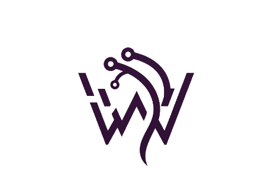
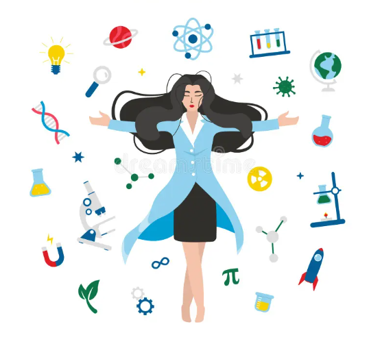
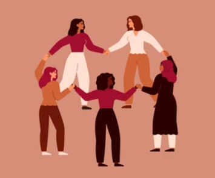
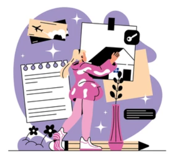
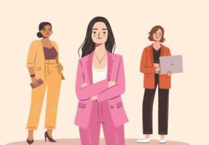

CodePath
Offers free, industry-aligned courses that help students and professionals advance their software engineering skills.

Join the Women in Tech Tribe 2025 to explore the cutting edge of tech, focusing on leadership, innovation, and career advancement for women. Sessions delve into vital topics such as breaking the glass ceiling, building personal brands, and leveraging emotional intelligence in the workplace. Connect with industry leaders, gain actionable insights, and empower yourself and others to thrive in the ever-evolving tech landscape.


Fast-paced, rotating mentoring event where participants meet with experienced women in tech for 5–7 minute one-on-one conversations. It’s a great opportunity for attendees to ask questions, get career advice, and build connections with industry professionals.

An interactive creative session where participants design vision boards to map out their tech career goals, dream roles, and personal growth milestones. Using magazines, digital tools, or drawing materials, this activity encourages reflection, goal-setting, and inspiration in a supportive environment.

A dynamic panel featuring diverse women leaders in technology who share their personal journeys, challenges they've overcome, and advice for navigating the industry. The session includes a live Q&A, giving attendees the chance to ask meaningful questions and gain real-world insights.
Offers free, industry-aligned courses that help students and professionals advance their software engineering skills.
Learn more about programs supporting women in tech.